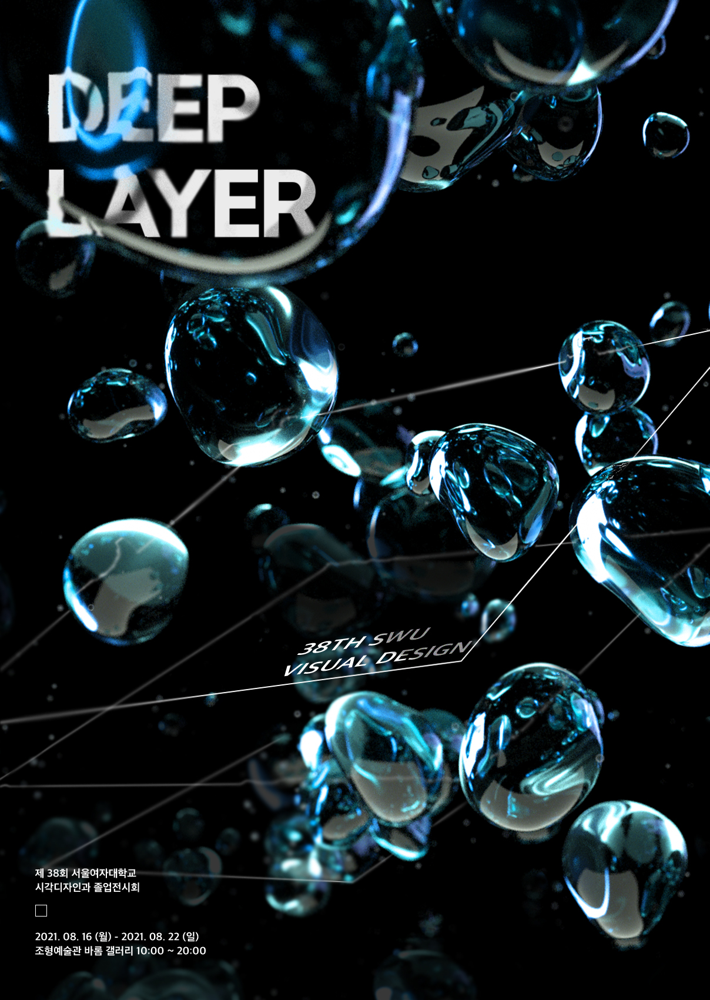

DEEP
LAYER
DEEP LAYER

서울여자대학교 시각디자인학과 38회 졸업전시
Seoul Women's University Visual Communication Design
Seoul Women's University Visual Communication Design
DEEP LAYER
코로나로 인해 어둡고 한치 앞도 볼 수 없는 상황 속에서 우리는 살아가고 있다. 마치 빛도 없고 아무것도 보이지 않는 심해와 같다. 그러나 심해에서 자신만의 방식대로 빛을 내며 살아가는 심해어처럼, 우리도 어두운 상황 속에서 자신만의 방식대로 자신을 표현하며 살아간다. 본 전시는 겉으로 보여지는 것만이 아닌, 레이어 아래 더 깊은 의미를 담은 작품을 통해, 코로나 시기를 극복해 나가는 우리를 표현한다.
Credit
서울여자대학교 시각디자인학과 38회 졸업전시
Seoul Women's University Visual Communication Design
Seoul Women's University Visual Communication Design
졸업준비위원회
위원장
부위원장
그래픽 팀장
설치 팀장
웹장 팀장
부위원장
그래픽 팀장
설치 팀장
웹장 팀장
정수빈
김민별
최희선
오반디
이민희
김민별
최희선
오반디
이민희
회계 팀장
도록 팀장
영상 팀장
행사 팀장
도록 팀장
영상 팀장
행사 팀장
양혜림
오화은
김진서
주연희
오화은
김진서
주연희
지도교수
민병걸 유영재 최장섭 박고은
참여학생
김다솔
김미조
김민경
김민별
김민정
김소정
김영은
김윤경
김진서
김태연
마찬영
백지우
서미연
서지송
송정연
송하은
신다은
신별은
신수민
양예진
양은성
양혜림
염혜빈
오반디
오화은
윤송희
이민희
이은비
이혁희
임나리
전형주
정서림
정수빈
정은아
정하영
주연희
최승아
최지원
최지혜
최희선
황선영
김다솔
김미조
김민경
김민별
김민정
김소정
김영은
김윤경
김진서
김태연 마찬영 백지우 서미연 서지송 송정연 송하은 신다은 신별은
신수민 양예진 양은성 양혜림 염혜빈 오반디 오화은 윤송희 이민희
이은비 이혁희 임나리 전형주 정서림 정수빈 정은아 정하영 주연희
최승아 최지원 최지혜 최희선 황선영
김태연 마찬영 백지우 서미연 서지송 송정연 송하은 신다은 신별은
신수민 양예진 양은성 양혜림 염혜빈 오반디 오화은 윤송희 이민희
이은비 이혁희 임나리 전형주 정서림 정수빈 정은아 정하영 주연희
최승아 최지원 최지혜 최희선 황선영
웹사이트 개발
이주현 장유진